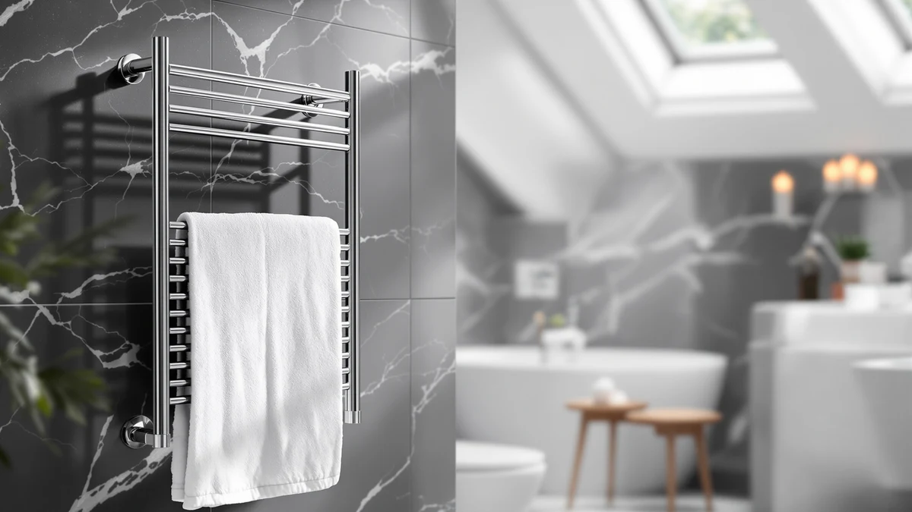

Best Foldable Towel Warmers of 2026: Space-Saving Picks
Prices and picks verified as of August 2026. Independent, reader-supported reviews.


Quick Answer
For most people, the best foldable towel warmer is the VIPBATH 35L, a stainless steel bag that fits a full bath sheet and folds flat once you unplug it. If you only need to warm a hand towel or want to spend less, the EASYINBEAUTY 5L costs under half the price.
Our pick: VIPBATH 35L Towel Warmer for — $59.99 Check Price on Amazon
Bottom line: our top pick is the VIPBATH 35L Towel Warmer for Bathroom at $59.99. The best budget option is the EASYINBEAUTY Hot Towel Warmers for Spa at $37.99.
Things to Know Before You Buy
- "Foldable" describes the warmer, not only the towel. Most of the picks below are soft-sided or canvas-style bags that heat a rolled towel, then fold flat once you unplug them, unlike a wall-mounted rack that stays bolted to the tile. That distinction is why people search for the best foldable towel warmers instead of a fixed rack.
- Capacity is measured in liters, not towel count. A 5-liter bag fits a hand towel or a child's towel, while a 35 to 38-liter model swallows an adult bath sheet or a robe. Check the liter rating before you buy so the bag actually closes around what you own.
- An auto shut-off feature matters more on an enclosed bag. Because these units heat a rolled towel inside a closed liner, a listing that mentions a timer or auto shut-off is worth prioritizing over one that doesn't say either way.
- Storage footprint is the whole point. A foldable towel warmer tucks into a closet, under a vanity, or into a suitcase, so measure how it packs down, not only how much it holds, if space is tight in your bathroom.
The best foldable towel warmers solve a problem a fixed wall rack can't: they heat a towel fast and then get out of the way, folding flat into a closet, a cabinet, or a suitcase once you're done with them. That makes them the practical choice for renters, small bathrooms, or anyone who wants a warm towel without drilling into the tile.
Every model here is a soft-sided bag or a bucket-style unit built around the same basic idea: wrap a rolled towel inside an insulated liner, plug it in, and let it heat evenly in a few minutes. What separates them is capacity, measured in liters, how the fold-flat construction feels for repeated use, and price relative to what you actually get.
For most people, our pick is the VIPBATH 35L Towel Warmer ($59.99). Its 35-liter capacity comfortably fits an adult bath sheet, it uses a stainless steel liner instead of thin plastic, and it costs less than most of the field while still folding down for storage. If you want something noticeably cheaper for a smaller towel, the EASYINBEAUTY Hot Towel Warmer ($37.99) is the most affordable pick here, while the Aquatrend WiFi Heated Towel Rack ($159.99) is worth considering only if smart controls matter more to you than price.
Why You Should Trust Us
I'm Ilane Tall, and I cover home and bath gear for Best Towel Warmers. For this guide to the best foldable towel warmers, I read the published specifications, listed capacities, and verified owner feedback for every bag and bucket-style warmer here, then compared them against each other on the details that change how one performs in a small bathroom: liter capacity, material, price, and how the unit folds down once you're finished with it.
I weigh practical ownership problems, like a bag that won't fully close around a bath sheet or a price that's high for what you get, because those are the issues that make people regret a purchase. My goal with this roundup is to point you toward the bag or bucket that fits your towel size and your storage space, not the one with the flashiest listing copy.
How We Picked
We started by narrowing the field to towel warmers that fold or collapse for storage, which ruled out fixed wall racks and left us with soft-sided bags and rigid bucket-style units that still pack down flat. From there we compared capacity, since a foldable towel warmer lives or dies on whether your actual towel fits inside it.
We also weighed material and construction, since stainless steel liners hold heat more evenly than thin plastic, price relative to capacity, and how each listing describes its fold-flat storage. A $37.99 bag that only fits a hand towel isn't a better deal than a $55.99 bag that swallows a full bath sheet, so we ranked value by liters per dollar as much as by sticker price.
How We Compared
We base this comparison of the best foldable towel warmers on each product's published capacity, dimensions, and materials, plus verified owner reviews, rather than a physical test lab. For every pick we read how owners describe heat-up time, whether the bag runs true to its stated liter capacity, and how it holds up to repeated folding and unfolding.
We don't assign numeric scores or invent lab results. Where we note a drawback, such as a smaller capacity or a higher price relative to the field, it comes directly from the specifications on this page or a pattern we saw repeated across verified reviews, not a guess.
Our Picks

VIPBATH 35L Towel Warmer for
What we like
- 35-liter capacity comfortably fits a full-size adult bath sheet
- Stainless steel liner heats more evenly than thin plastic bags
- Folds flat for storage in a closet or under the sink
- Priced well below the wall-mounted racks in this roundup
Flaws but not dealbreakers
- Warms one towel at a time, like every bag-style unit here
- Fabric exterior needs a dry spot to fold and store
- No published rating or review count to weigh against competitors
| Material | Stainless steel |
| Size | — |
The VIPBATH earns the top spot because it fits the job most people actually need a foldable towel warmer for: heating a full-size bath sheet, not only a hand towel. At 35 liters it has real room to spare over the 5-liter bags in this field, and the stainless steel liner spreads heat more evenly than the thin plastic used in some cheaper bags, so you're less likely to pull out a towel that's hot on one side and cool on the other.
At $59.99 it sits comfortably in the middle of this roundup, well under the $159.99 Aquatrend rack and only a few dollars more than the compact EASYINBEAUTY. Like every bag-style warmer here it heats a single towel at a time and needs a dry spot to fold flat when it's not in use, but for the price and capacity, it's the pick most bathrooms will be happiest with.

Aquatrend WiFi Heated Towel Rack
What we like
- WiFi connectivity lets you schedule or start heating remotely
- Stainless steel construction built to hold heat steadily
- Rack-style warming works for more than one towel at a time
- Smart controls feel more like a permanent bathroom fixture
Flaws but not dealbreakers
- At $159.99 it's by far the most expensive pick in this roundup
- Less suited to fold-and-store use than the bag-style warmers here
- Requires a WiFi setup step the simpler bag warmers skip entirely
| Material | Stainless steel |
| Size | — |
The Aquatrend stands apart from the rest of this list because it leans on smart features rather than fold-flat portability. Its WiFi connection lets you start a warming cycle from your phone before you're even out of bed, and the stainless steel build is the sturdiest material used across this roundup, which matters if you want a unit that can run daily for years.
That capability comes at a real cost. At $159.99, it's more than twice the price of our VIPBATH top pick, and its rack-style design isn't built to fold away in a drawer the way the bag warmers here are. We'd only point you to the Aquatrend if smart, app-based control is a priority you're willing to pay for; if you want a warm towel and easy storage instead, one of the cheaper bags below does the job for less.

EASYINBEAUTY Hot Towel Warmers for
What we like
- Lowest price of any pick in this roundup at $37.99
- 5-liter size is easy to tuck into a small cabinet or drawer
- Stainless steel liner despite the entry-level price
- Folds flat when it's not in use
Flaws but not dealbreakers
- 5-liter capacity fits a hand towel, not a full bath sheet
- Smallest footprint here means the least flexibility for larger towels
- No published rating or review count
| Material | Stainless steel |
| Size | 5L |
The EASYINBEAUTY is the entry point for anyone who wants to try a foldable towel warmer without committing much money or space. At $37.99, it costs a fraction of what the Aquatrend rack asks, and its 5-liter capacity is sized for a hand towel or a child's towel rather than a full bath sheet, which keeps the whole unit small enough to fold away in a shallow drawer.
The trade-off is capacity. Where the VIPBATH's 35 liters can take on an adult bath sheet, the EASYINBEAUTY's 5 liters can't, so it's better suited to a powder room, a kid's bathroom, or as a second warmer for hand towels rather than a household's main bath towel. If that's the size you need, it's the best value in this roundup by a wide margin.

AAOBOSI Towel Warmer 4 in
What we like
- 35-liter capacity matches our top pick's bath-sheet-size room
- Stainless steel liner for even heat retention
- Priced a few dollars under the VIPBATH at $55.99
- Folds flat for storage between uses
Flaws but not dealbreakers
- Still a single-towel unit despite the larger capacity
- Worth confirming the current listing's exact features before buying
- No published rating or review count to compare against competitors
| Material | Stainless steel |
| Size | 35L |
The AAOBOSI matches our top pick almost spec for spec: a 35-liter capacity built around a stainless steel liner, priced at $55.99, a few dollars under the VIPBATH. If the VIPBATH happens to be out of stock or priced higher on a given day, this is the closest substitute in the roundup, with essentially the same room for a full-size bath sheet.
Because the two units are so similar on paper, the deciding factor usually comes down to price on the day you shop and which brand's current listing and photos you trust more. Either way, you're getting the same core value: a roomy, fold-flat warmer for meaningfully less than the wall-mounted Aquatrend rack.

cocozywarm Towel Warmer & Laundry
What we like
- Doubles as a laundry warmer, not only a towel bag
- Stainless steel construction in line with the rest of the field
- Matches the VIPBATH's $59.99 price point
- Folds flat for storage like the other bag-style picks
Flaws but not dealbreakers
- No published liter capacity, so confirm sizing before buying
- Dual-purpose branding may mean it's less specialized than a towel-only bag
- No published rating or review count
| Material | Stainless steel |
| Size | — |
The cocozywarm distinguishes itself with dual-purpose branding: the listing positions it as a warmer for both towels and small laundry loads, not only a towel bag. That's a useful angle if you also want to warm robes, baby clothes, or a stack of washcloths and don't want a separate appliance for each job.
At $59.99 it lands right alongside our VIPBATH top pick, and it shares the same stainless steel build and fold-flat storage as the rest of this roundup. The listing doesn't publish an exact liter capacity the way the VIPBATH and AAOBOSI do, so if you have a specific bath sheet size in mind, check the current listing's dimensions before you buy.

cocozywarm Towel Warmer & Laundry
What we like
- 38-liter capacity is the largest published size in this roundup
- Cheaper than the other cocozywarm listing at $49.99
- Same dual-purpose towel-and-laundry design
- Stainless steel liner and fold-flat storage
Flaws but not dealbreakers
- Two cocozywarm listings in this roundup can make comparison-shopping confusing
- Still a single-item-at-a-time warmer despite the larger capacity
- No published rating or review count
| Material | Stainless steel |
| Size | 38L |
This second cocozywarm listing is the one to pick if capacity matters more to you than the brand's other option. At 38 liters, it's the largest published capacity in this entire roundup, edging out even our 35-liter VIPBATH and AAOBOSI picks, and it costs ten dollars less than the other cocozywarm at $49.99.
It keeps the same dual-purpose towel-and-laundry positioning as its sibling listing, along with the stainless steel build and fold-flat storage common to every bag-style warmer here. The only complication is that two cocozywarm listings appear in this roundup, so double-check which one you're adding to your cart, since this is the larger, cheaper of the two.

38L Foldable Towel Warmer Bucket
What we like
- 38-liter capacity ties for the largest in this roundup
- Purpose-built bucket design rather than a dual-purpose bag
- Priced at $51.99, below both the AAOBOSI and VIPBATH
- Folds flat when empty, per its listed foldable bucket design
Flaws but not dealbreakers
- "Large" is the only published size descriptor beyond the 38-liter rating
- Single-towel capacity like every bag or bucket warmer here
- No published rating or review count
| Material | Stainless steel |
| Size | Large |
The ERABAY is built specifically as a foldable towel warmer bucket rather than a dual-purpose bag, and that focus shows in the price: at $51.99, it undercuts both the VIPBATH and AAOBOSI while matching the cocozywarm's larger 38-liter capacity. If you'd rather buy a warmer built for exactly one job, this is the straightforward option.
Its listing describes the size simply as Large alongside the 38-liter rating, so if you need precise fold-flat dimensions for a tight storage spot, check the current listing before buying. Otherwise, it delivers the same core value as our top picks: a roomy, stainless steel, fold-flat warmer for less than the price of a wall-mounted rack.

38L Foldable Towel Warmer Bucket
What we like
- Same 38-liter, stainless steel bucket design as its sibling listing
- Purpose-built for towels, not a dual-use laundry bag
- Folds flat for storage between uses
- A direct alternative if the cheaper ERABAY listing is unavailable
Flaws but not dealbreakers
- Costs four dollars more than the other ERABAY listing for the same capacity
- "Large" remains the only size descriptor beyond the liter rating
- No published rating or review count
| Material | Stainless steel |
| Size | Large |
This second ERABAY listing offers the identical 38-liter, stainless steel bucket design as the one above, at a few dollars more, $55.99 instead of $51.99. Functionally there's no real difference in what you're buying: the same capacity, the same fold-flat storage, and the same purpose-built focus on towels rather than laundry.
We include it here because Amazon listings for the same base product sometimes fluctuate in price or availability, and having a second option matters if the cheaper ERABAY listing sells out. Compare the current price on both before you buy; whichever is cheaper on the day you shop is the better pick, since the underlying product is the same.
Quick Comparison
| Product | Material | Price | Rating | Best for | Get it |
|---|---|---|---|---|---|
| VIPBATH 35L Towel Warmer for | Stainless steel | $59.99 | 4 | Most people; bath-sheet capacity at a fair price | View on Amazon → |
| Aquatrend WiFi Heated Towel Rack | Stainless steel | $159.99 | 4 | WiFi and smart control, at a premium | View on Amazon → |
| EASYINBEAUTY Hot Towel Warmers for | Stainless steel | $37.99 | 4 | The cheapest way in, for hand towels | View on Amazon → |
| AAOBOSI Towel Warmer 4 in | Stainless steel | $55.99 | 4 | Same capacity as our top pick, different brand | View on Amazon → |
| cocozywarm Towel Warmer & Laundry | Stainless steel | $59.99 | 4 | Dual-purpose towel and laundry warming | View on Amazon → |
| cocozywarm Towel Warmer & Laundry | Stainless steel | $49.99 | 4 | The largest published capacity here | View on Amazon → |
| 38L Foldable Towel Warmer Bucket | Stainless steel | $51.99 | 4 | A dedicated bucket design at a lower price | View on Amazon → |
| 38L Foldable Towel Warmer Bucket | Stainless steel | $55.99 | 4 | A backup option if the cheaper ERABAY sells out | View on Amazon → |
What does "foldable" actually mean for a towel warmer?
It means the warmer itself, usually a soft-sided bag or a bucket-style unit, collapses flat once you unplug it and let it cool, rather than staying mounted to a wall like a heated towel rack.
How do I know what size foldable towel warmer to buy?
Check the liter rating in the listing.
The Competition
Eight foldable towel warmers made this list, but a few clear patterns explain why some rank above others.
The Aquatrend WiFi Heated Towel Rack is the standout on features, with app-based scheduling and a sturdy stainless steel build, but at $159.99 it costs nearly three times our VIPBATH top pick and isn't designed to fold away the way the bag-style warmers here are. We'd only recommend it if smart controls are worth that premium to you.
The two cocozywarm listings compete mainly with each other. The 38-liter version at $49.99 offers more capacity for less money than the unsized $59.99 listing, so unless the dual-purpose laundry angle specifically appeals to you at that size, the cheaper cocozywarm is the better buy of the pair.
The two 38L Foldable Towel Warmer Bucket listings from ERABAY are functionally identical, differing only by a few dollars ($51.99 versus $55.99). Buy whichever is cheaper or in stock when you shop; there's no meaningful difference in what you receive.
The EASYINBEAUTY and AAOBOSI both stayed in the running because they serve distinct niches: the EASYINBEAUTY is the cheapest entry point for a small towel, and the AAOBOSI matches our top pick's capacity almost exactly. Neither beat the VIPBATH outright, but both are reasonable substitutes if price or availability shifts.
Frequently Asked Questions
What does "foldable" actually mean for a towel warmer?
It means the warmer itself, usually a soft-sided bag or a bucket-style unit, collapses flat once you unplug it and let it cool, rather than staying mounted to a wall like a heated towel rack. That's what lets you store it in a closet, under a sink, or even pack it for travel, which is the main reason people search for a foldable towel warmer instead of a fixed rack.
How do I know what size foldable towel warmer to buy?
Check the liter rating in the listing. A 5-liter bag, like the EASYINBEAUTY here, fits a hand towel or a child's towel, while a 35 to 38-liter model, like the VIPBATH, AAOBOSI, cocozywarm, or ERABAY picks, comfortably fits a full-size adult bath sheet. Buying based on liters rather than guessing from photos avoids ending up with a bag that won't close around your actual towel.
Are foldable towel warmers as good as wall-mounted racks?
They do a different job. A bag or bucket-style warmer, like most of the picks here, heats one towel quickly and then folds away, which suits renters and small bathrooms. A wall-mounted rack, like the Aquatrend WiFi Heated Towel Rack in this roundup, warms towels open on a fixed bar and often adds smart features, but it needs permanent wall space and typically costs more. Choose foldable for flexibility and price, and a rack if you want a built-in fixture.
Is it safe to leave a foldable towel warmer plugged in?
We don't recommend leaving any towel warmer running unattended, foldable or not. Plug the unit into a GFCI-protected bathroom outlet, keep it away from standing water, and unplug it once your towel is warm rather than leaving it running for hours. If a listing specifies an auto shut-off timer, treat that as a feature to look for rather than a substitute for switching it off yourself.
Can a foldable towel warmer double as a laundry warmer?
Some can. The cocozywarm listings in this roundup are marketed for both towels and small laundry loads, like robes or baby clothes, while the VIPBATH, AAOBOSI, and ERABAY buckets are built primarily around towels. If you want the dual-purpose function, look for that language in the listing rather than assuming every bag-style warmer can handle laundry.